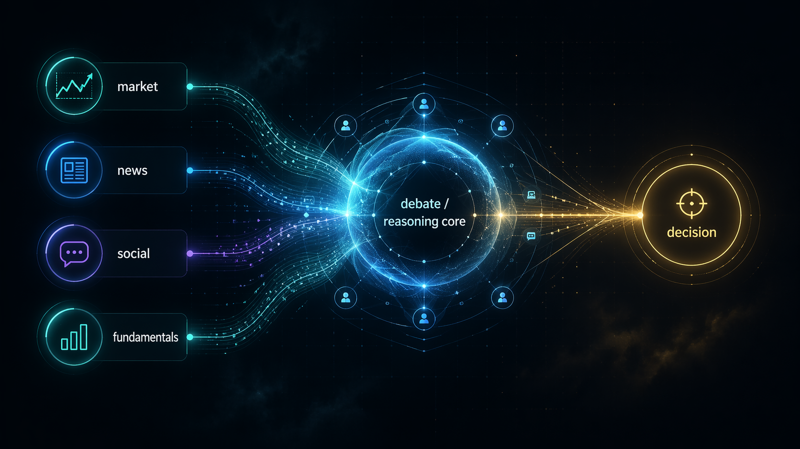
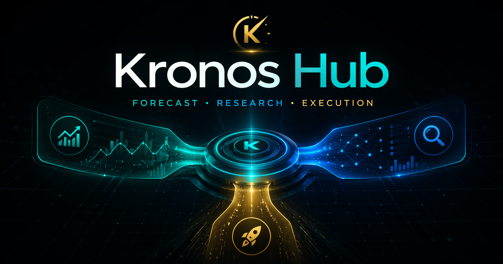
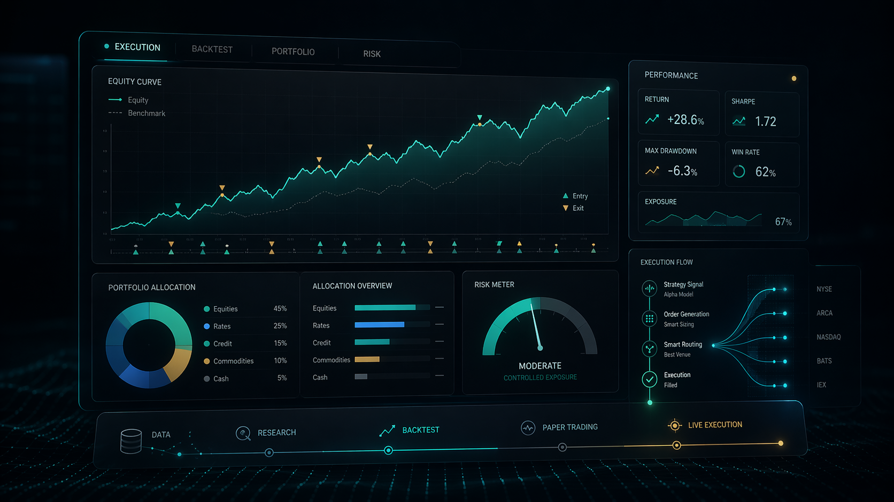

Unified Platform Overview
One visual surface for the full path: forecast, research, and execution stitched together through the hub.
Kronos Hub
Kronos Hub is an integration-first quant platform that connects Kronos forecasting, TradingAgents research, and AI Hedge Fund execution/backtesting through a shared gateway and worker runtime.


One visual surface for the full path: forecast, research, and execution stitched together through the hub.

Execution, portfolio, risk, and backtest surfaces can act as the downstream shell for the hybrid pipeline.
The hub now pushes forecast context into TradingAgents analysts, researchers, trader, risk agents, and the portfolio manager.
POST /predictions/kronosPOST /predictions/kronos/batchPOST /research/tradingagentsPOST /execution/ai-hedge-fund/runPOST /execution/ai-hedge-fund/backtestPOST /runsThe upstream repos are useful on their own. Kronos Hub is for teams that want a shared API, isolated workers for dependency conflicts, and one place to build forecast-aware quant flows.
Use the hosted docs page as the public-facing landing surface, then route users into the README, API docs, and hybrid demo request template.
Copy-Item .env.example .env
pip install -e .
python .\scripts\smoke_check.py
python -m uvicorn apps.api_gateway.main:app --reload --port 8010.\examples\scripts\invoke-hybrid-demo.ps1
.\examples\scripts\invoke-hybrid-demo.ps1 -EnableResearch
.\examples\scripts\invoke-hybrid-demo.ps1 -EnableResearch -EnableExecutionThe root integration layer is Apache-2.0. Vendored upstream projects keep their own licenses and notices.
Read third-party notices